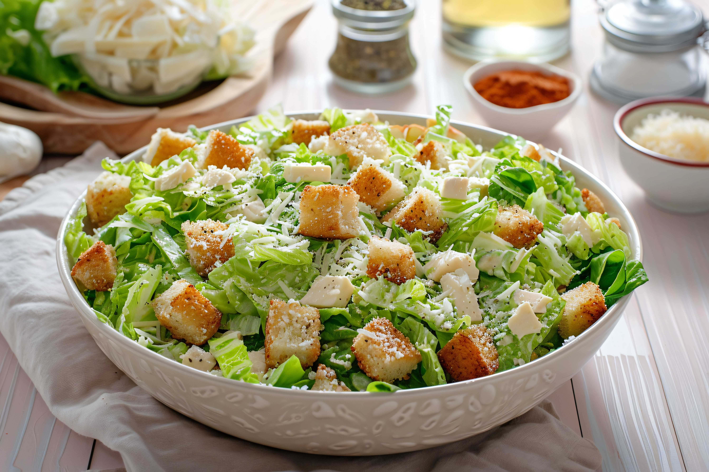

SALADA CAESER
A salada clássica que todo mundo ama. Um equilíbrio perfeito entre crocância, cremosidade e aquele toque de parmesão.
TEMPO
30 MIN
PORÇÕES
2
NÍVEL
FÁCIL
AVALIAÇÕES
4.8

INGREDIENTES
MODO DE PREPARO
INFORMAÇÃO NUTRICIONAL
Calorias: 320 kcal
Proteínas: 9 g
Carboidratos: 18 g
Gorduras: 22 g
BENEFÍCIOS
Fonte de fibras para saciedade.
Vitaminas do complexo B.
Gorduras boas do azeite de oliva.